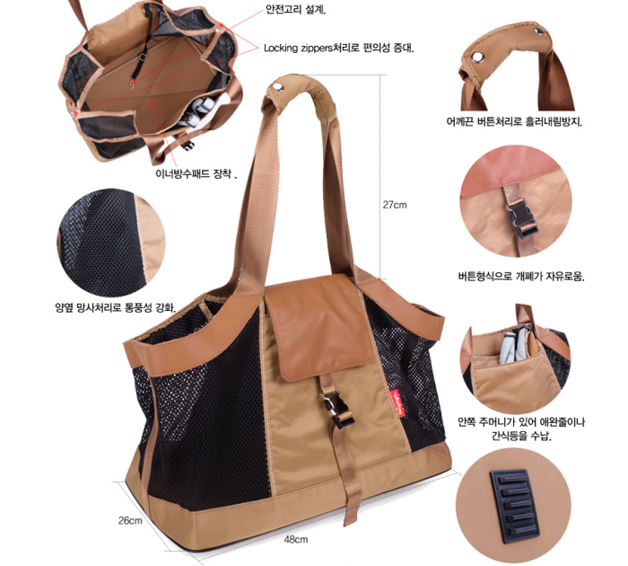
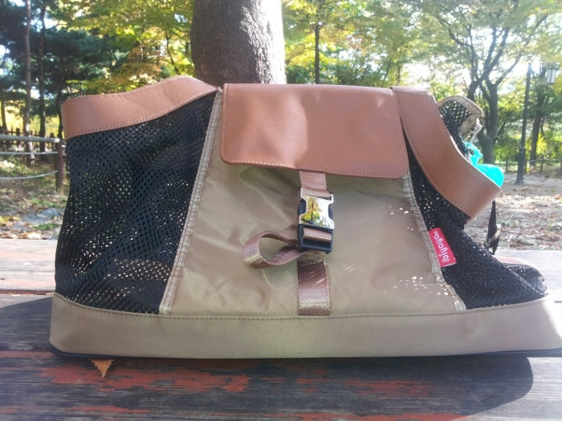
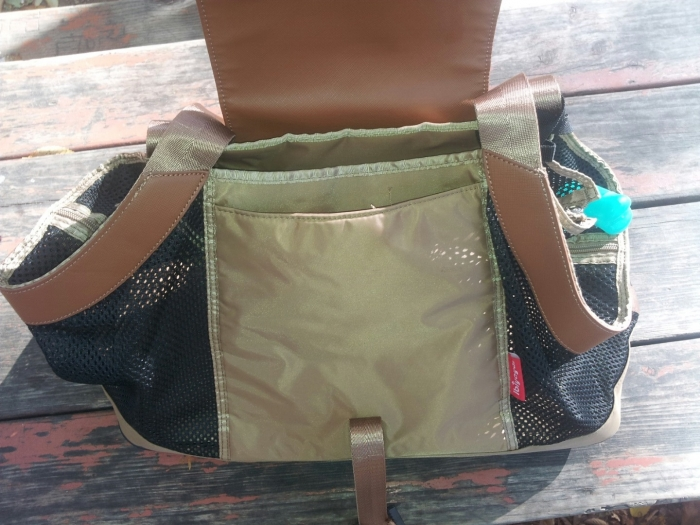
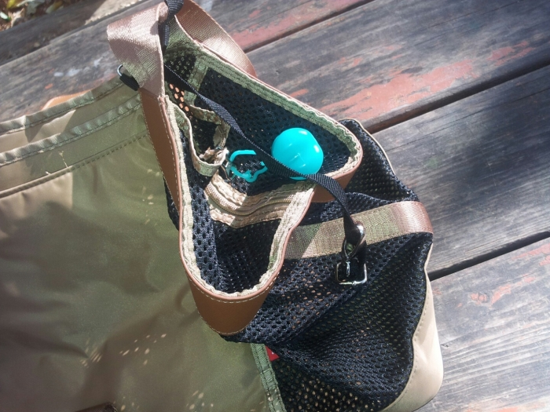
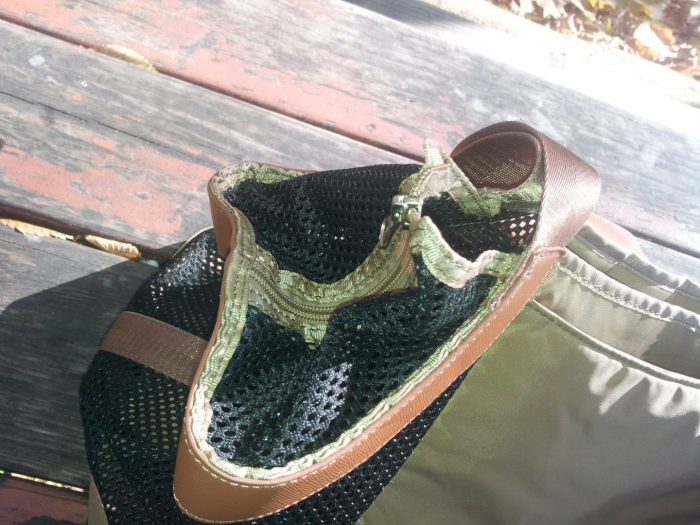
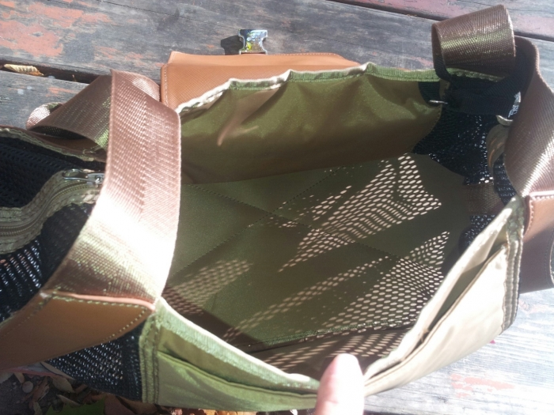
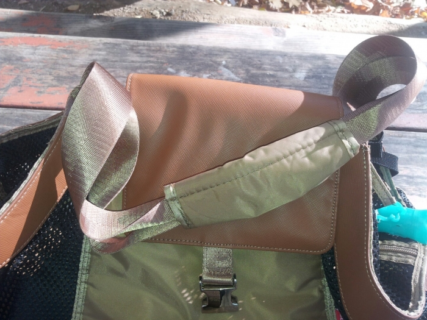
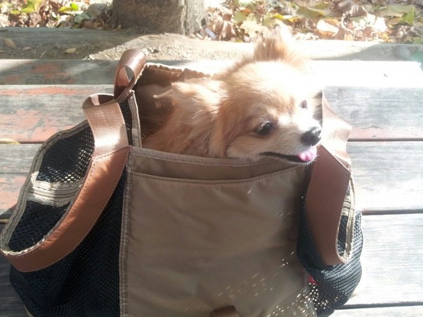
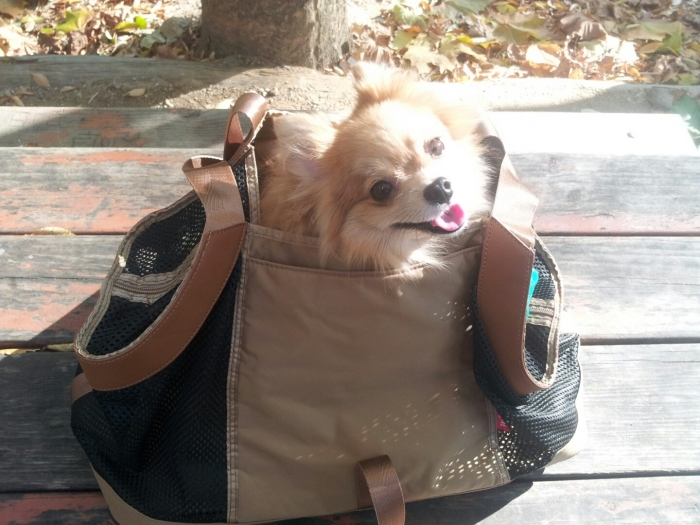

선물로 이비야야 레저백을 드디어 받았어요....
좀 사용감있어보일꺼에요
ㅋㅋㅋㅋㅋㅋㅋㅋㅋㅋㅋㅋㅋ
주말마다 애들 넣고 다니느라 말이죠
항상있던 가방에 아이가 둘 들어가는것이 없어서
이비야야레저백을 보고 다린이랑 단비가 들어가겠네 라는 생각에 주문을 하고
거기에 자세한 사항이 없어서 인터넷을 뒤적여 보았더니
더 쏙 맘에 들더라구요

8키로 까지 가능 저희 다린이가 2키로 단비가 3.2키로이니 충분!
가방무게까지하면 무리없겠숴하고
야외나온김에 슬쩍 사진찍어서 올려보아요~
핸폰이 오래되서 근가 사진이 잘 안나오네요 ㅠㅠ
레저백 정면

레저백을 열면 안주머니가있어서 아이들줄도 넣을수있는데 저는 물그릇을 넣었어요

고리에 슬며시 똥츄도 걸고
ㅋㅋㅋㅋㅋㅋㅋㅋㅋㅋ
아이들 안전고리도 있구요

좀 단점이라면...... 가방을닫고 저사이 틈이 있는데 가끔 단비가 숑하고 머리를 내밀기도한다지요.....

평평한 바닥이여서 다린이는 펀들보다 요가방을 더 좋아라하더라구요

어깨끈 흘러내림방지때문인지 메고 다닐때 흘러내림은 없구요

가방안에 쏙~ 단비
놀고있는데 안에 넣었더니 안들어가시는....


혼자서 애들 데리고 산책갈때 힘이 들었는데 레저백 생기고 좀더 여우롭게 다닐수있더라구요 ^^
|